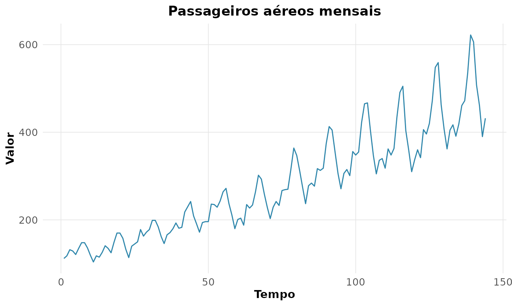
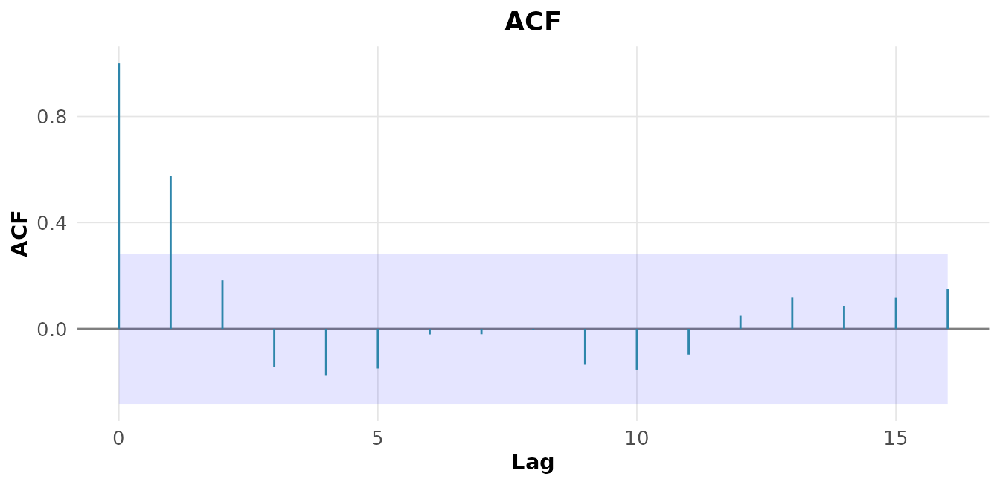
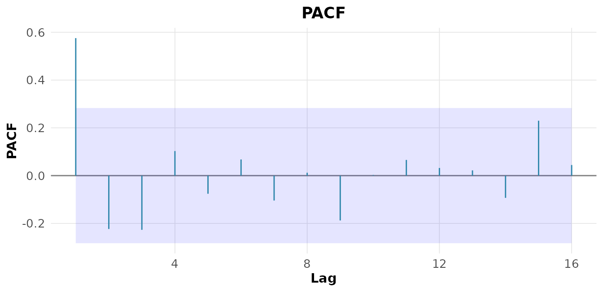
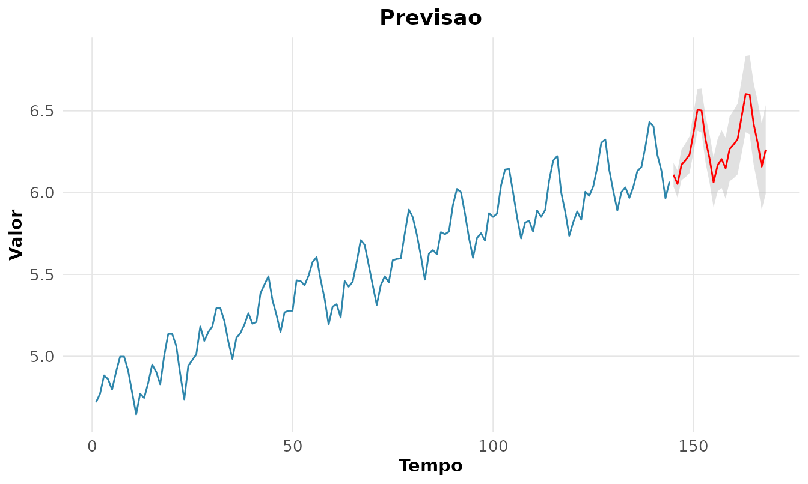

8. Séries temporais: modelos ARIMA e SARIMA
Source:vignettes/v08-series-arima.Rmd
v08-series-arima.RmdUma série temporal é uma sequência de observações ordenadas no tempo,
em que a dependência entre instantes vizinhos é a própria informação de
interesse. A metodologia de Box-Jenkins (Box et al. 2015; Morettin and Toloi 2006)
modela essa dependência em três etapas: identificação,
estimação e diagnóstico. Usamos a série clássica
AirPassengers (passageiros aéreos mensais, 1949-1960), que
combina tendência e sazonalidade.
rnp_grafico_serie(as.numeric(AirPassengers), titulo = "Passageiros aéreos mensais")
Estacionariedade
Um processo é estacionário se média, variância e autocovariâncias não variam no tempo — condição necessária para os modelos ARMA. O teste de Dickey-Fuller aumentado (ADF) tem : existe raiz unitária (série não estacionária):
rnp_ts_adf(as.numeric(AirPassengers))
#> # A tibble: 1 × 5
#> estatistica lag valor_critico_5 p_valor_aprox estacionaria
#> <dbl> <dbl> <dbl> <dbl> <lgl>
#> 1 -0.962 5 -2.86 0.1 FALSEA estatística está acima do valor crítico : não se rejeita a raiz unitária. A série precisa ser diferenciada. Tomando o logaritmo (para estabilizar a variância) e diferenciando:
rnp_ts_adf(diff(log(as.numeric(AirPassengers))))
#> # A tibble: 1 × 5
#> estatistica lag valor_critico_5 p_valor_aprox estacionaria
#> <dbl> <dbl> <dbl> <dbl> <lgl>
#> 1 -6.46 5 -2.86 0.01 TRUEAgora a estatística é bem menor que o crítico: a série diferenciada é estacionária. O teste KPSS (: estacionariedade) confirma de forma complementar.
Modelo ARIMA
Um modelo ARIMA combina parte autorregressiva (AR), diferenças e parte de médias móveis (MA), escrito com o operador de defasagem como
onde e .
A identificação clássica lê a ordem na ACF e na PACF: um corte abrupto na ACF após o lag sugere MA(); um corte na PACF após o lag sugere AR().
rnp_grafico_acf(lh, tipo = "acf")
rnp_grafico_acf(lh, tipo = "pacf")
A seleção automática por AICc dispensa essa leitura manual e compara muitos candidatos de uma vez:
rnp_auto_arima(lh, max_p = 2, max_d = 1, max_q = 2)$selecao
#> # A tibble: 5 × 4
#> p d q criterio_aicc
#> <int> <int> <int> <dbl>
#> 1 0 0 2 63.6
#> 2 1 0 0 65.0
#> 3 2 0 0 65.0
#> 4 1 0 2 66.0
#> 5 1 0 1 66.1Para a série lh (hormônio luteinizante), o melhor modelo
é um MA(2), com AICc mínimo de
.
Modelo SARIMA
Quando há sazonalidade de período , o modelo SARIMA acrescenta termos sazonais :
O famoso “modelo airline” de Box-Jenkins é o SARIMA sobre o log da série:
fit <- rnp_sarima(log(AirPassengers), ordem = c(0, 1, 1),
sazonal = c(0, 1, 1), periodo = 12)
fit$coeficientes
#> # A tibble: 2 × 5
#> termo estimativa erro_padrao z p_valor
#> <chr> <dbl> <dbl> <dbl> <dbl>
#> 1 ma1 -0.402 0.0896 -4.48 0
#> 2 sma1 -0.557 0.0731 -7.62 0Ambos os coeficientes (MA não-sazonal e MA sazonal) são altamente significativos.
Diagnóstico dos resíduos
Um bom modelo deixa resíduos indistinguíveis de ruído branco. O teste de Ljung-Box verifica ausência de autocorrelação:
rnp_ts_residuos(fit)
#> # A tibble: 2 × 4
#> teste estatistica p_valor interpretacao
#> <chr> <dbl> <dbl> <chr>
#> 1 ljung-box 8.81 0.359 ruido branco (ok)
#> 2 shapiro-wilk 0.986 0.167 normalidade okLjung-Box com (não rejeita ruído branco) e Shapiro-Wilk com (normalidade preservada): o modelo está adequado.
Previsão
Validado o modelo, projetam-se valores futuros com intervalos de predição:
rnp_ts_previsao(fit, h = 24)$grafico
A faixa cinza representa a incerteza crescente da previsão — quanto mais longe o horizonte, mais larga.
Outras ferramentas
| Função | Uso |
|---|---|
rnp_ts_kpss |
teste de estacionariedade (complementa o ADF) |
rnp_ts_ccf |
correlação cruzada entre duas séries |
rnp_ts_var |
autorregressão vetorial + causalidade de Granger |
rnp_ts_garch |
modelagem de volatilidade (séries financeiras) |
Síntese
A modelagem Box-Jenkins é um ciclo: identificar a
ordem (estacionariedade, ACF/PACF, AICc), estimar os
parâmetros, diagnosticar os resíduos e só então
prever. Cada etapa tem sua função no rnp,
e o diagnóstico de resíduos é o que separa um modelo confiável de um
ajuste cego.
Exercícios
Resolva com o rnp, usando as séries
AirPassengers, lh, nottem,
UKgas e sunspot.year.
- A série
UKgasé estacionária? Aplique os testes ADF e KPSS (rnp_ts_adf,rnp_ts_kpss). - Estabilize a variância e diferencie até obter estacionariedade
(
rnp_ts_diferenciacao). - Examine a ACF e a PACF da série diferenciada
(
rnp_grafico_acf). - Selecione automaticamente a ordem ARIMA de
lh(rnp_auto_arima). - Ajuste o modelo escolhido e interprete os coeficientes
(
rnp_arima). - Diagnostique os resíduos pelo teste de Ljung-Box
(
rnp_ts_residuos). - Ajuste um SARIMA ao log de
AirPassengers(rnp_sarima). - Faça a previsão de 24 meses com intervalos
(
rnp_ts_previsao). - Calcule a média móvel de 12 meses de
AirPassengers(rnp_media_movel). - Aplique a suavização exponencial e compare com a média móvel
(
rnp_suavizacao_exponencial). - Decomponha
nottemem tendência, sazonalidade e ruído (rnp_ts_decomposicao). - Aplique o Holt-Winters a
AirPassengers(rnp_ts_holt_winters). - Calcule o periodograma de
sunspot.yeare identifique o período dominante (rnp_ts_periodograma). - Ajuste um VAR de ordem 2 a duas séries (
mdeaths,fdeaths) e teste a causalidade de Granger (rnp_ts_var). - Simule uma série com volatilidade variável e ajuste um GARCH(1,1)
(
rnp_ts_garch).